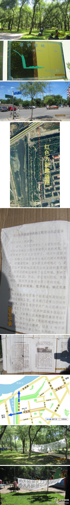

唉～不建设，没政绩！@淘淘老爸:保卫松花江南岸最后一处原生态公园--顾乡公园！6月河字片道路工程开工，据规划7月20日将毁占顾乡公园建华兴桥与友谊西路相连，该桥修建需毁占顾乡公园大片绿化带！去年已恨失水上公园，冰城没有几处这样的公园了！车行他路有选择，毁公园失绿永无补！有关部门请听听民声吧 
发生什么可怕的事情了？香坊区通乡街从安通街汽轮机厂到油坊街轴承厂的道路两旁，五十米一个便衣警察，路中间还有着正装的警察指挥车辆靠边儿。。。好诡异，好大排场～怕死就多干点儿好事儿，死了没准儿还能上个天堂～
你确定你不是崔永元？怎么什么实话都往外说呢。。。@作家崔成浩:朝鲜没有死缓。罪犯要么生，要么死，没那么多废话，死缓算什么？我可不可以这样理解，死刑缓刑两年，是不是两年内不犯罪就自动变成无期了？表现再好是不是就改成有期徒刑二十年了？不断有立功表现是不是就不断减刑了？保外就医是不是就彻底出来了？
 6月河字片道路工程开工，据规划7月20日将毁占顾乡公园建华兴桥与友谊西路相连，该桥修建需毁占顾乡公园大片绿化带！
6月河字片道路工程开工，据规划7月20日将毁占顾乡公园建华兴桥与友谊西路相连，该桥修建需毁占顾乡公园大片绿化带！ 去年已恨失水上公园，冰城没有几处这样的公园了！
去年已恨失水上公园，冰城没有几处这样的公园了！ 车行他路有选择，毁公园失绿永无补！有关部门请听听民声吧
车行他路有选择，毁公园失绿永无补！有关部门请听听民声吧